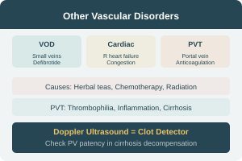

Veno-Occlusive Disease, Cardiac & Portal Vein Thrombosis
Veno-Occlusive Disease (VOD)
Rare — widespread occlusion of small central hepatic veins.
Causes
- Pyrrolizidine alkaloids (Senecio, Heliotropium teas)
- Cytotoxic drugs
- Hepatic irradiation
Features
- Similar to Budd-Chiari clinically
- Large hepatic veins patent radiologically
- VOD confirmed histologically
Treatment
- Supportive traditionally
- Defibrotide — binds to endothelium, promotes fibrinolysis, suppresses coagulation
Cardiac Hepatopathy
- Hepatic damage from congestion in right heart failure
- Constitutive pericarditis, tricuspid regurgitation
- Congenital heart disease with L→R shunts
- Nitric oxide (NO) overproduction may be important in pathogenesis
Key: Always consider cardiac causes in patients with congestive hepatomegaly and ascites.
Portal Vein Thrombosis
- Rare as primary event
- Predisposing: thrombophilia, intra-abdominal inflammation/neoplasms
- Cause of portal hypertension
- Acute: abdominal pain, diarrhea → bowel infarction (rare → surgery)
- Subacute: asymptomatic → extrahepatic portal HTN
- Ascites unusual in non-cirrhotic portal HTN
In cirrhosis: PVT can cause decompensation — assess by Doppler ultrasound.
Treatment: Anticoagulation (no randomized data on efficacy)
